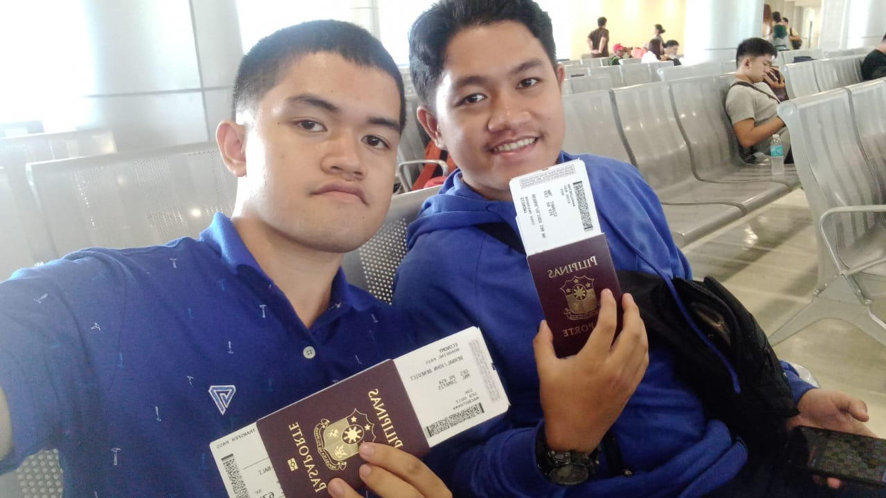
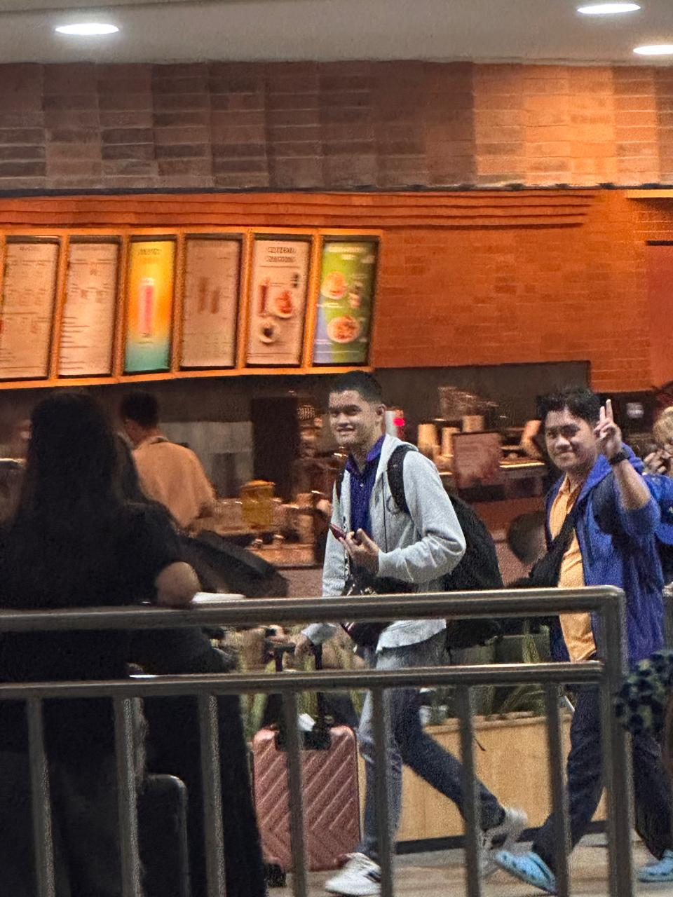

We are packed and ready on our way to General Santos City International Airport (GES). I felt worried about what might happen at immigration and during our stay in Seminyak and Les. But apart from that, we were ecstatic and looking forward to all the adventures waiting for us in Bali. Upon arrival at General Santos City Airport, we took our last photo with our family for the month and headed towards the departure gate.
Once we boarded the plane, we flew to Manila International Airport (NAIA Terminal 2). The flight was remarkably smooth. After landing at NAIA, we transferred via shuttle bus to Terminal 1, enjoyed a quick lunch at Jollibee, and proceeded to immigration. The anxiety melted away once cleared, and we boarded our international flight straight into I Gusti Ngurah Rai International Airport in Denpasar, Bali!

